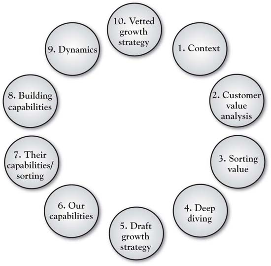

This book is based on a fairly simple premise, one that is not new: the firm that develops a better understanding of the value that customers seek has a competitive advantage. What is new, however, is the realistic look at just how difficult it is to develop that understanding. It is a long shot from simply “giving customers what they want.” It instead means developing an understanding of the deep drivers of customer value sought, shoring up our value proposition in the short term, but then building a longer-term, unique position that speaks to those customer values. We find, over and over again, that there are gaps between what managers currently believe customers value and believe and actual customer assessments. There is growth opportunity in closing these gaps, and the 3-Circle strategy process is precisely designed to uncover and leverage that opportunity.
In this chapter, we summarize the work by presenting the 10-step process in which a growth strategy project is defined and executed (see Figure 9.1 "Ten Steps in a 3-Circle Growth Strategy Project"). There are really three big elements underlying these 10 steps. First is for the management team to formally lay out the scope of the project and then their hypotheses about customer value (Steps 1 and 2a). Second is to gather data directly from target customers and to analyze it by breaking it down into the categories defined in the model and deeper analysis via laddering (Steps 2b, 3, and 4). Third is to develop particular growth strategy ideas and test them out via (a) assessment of capabilities required and alignment, and (b) evaluating the competitive dynamics of the marketplace. By Step 10, we have developed a growth strategy that has been developed upon the sound foundation of customer value analysis and screened by a deep analysis of capabilities, resources, and assets. To illustrate this process, we will use the case study of a major global pharmaceuticals firm.
Figure 9.1 Ten Steps in a 3-Circle Growth Strategy Project
